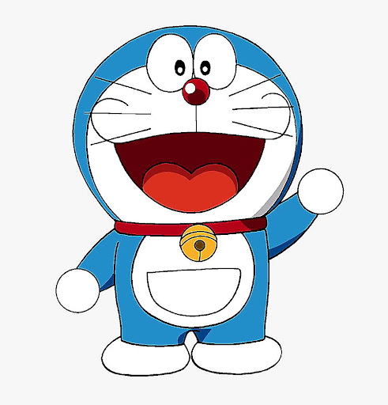
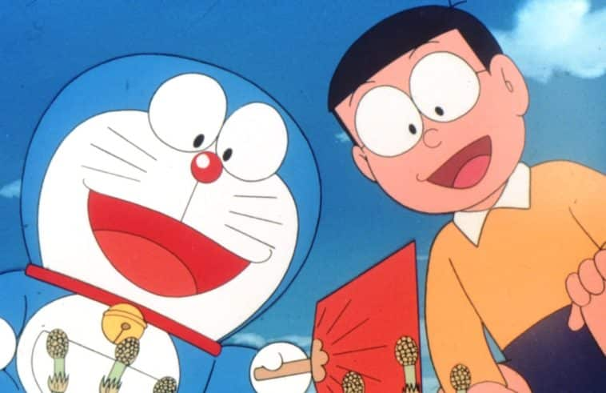

Doraemon è un manga scritto e disegnato da Fujiko F. Fujio e pubblicato in Giappone dal dicembre 1969 all'aprile 1996 sul mensile CoroCoro Comic di Shōgakukan.
La trama segue le avventure del giovane e sfortunato Nobita Nobi, il quale, con l'aiuto di un gatto robot di nome Doraemon, cerca di cambiare il suo futuro e diventare una persona migliore.
Con oltre 170 milioni di copie vendute in tutto il mondo, Doraemon è considerata una delle serie manga e anime più famose e di successo di tutti i tempi.
Descrizione

Doraemon è rappresentato come un gatto robot proveniente dal XXII secolo, venuto ad abitare a Tokyo nel passato per aiutare Nobita Nobi, ragazzo che avrebbe causato ai suoi discendenti numerosi problemi finanziari[1][2]. È stato fabbricato il 14 luglio 2112 alla fabbrica di robot Matsushiba; alla nascita, avvenuta il 3 settembre, era giallo e bianco, ed aveva le orecchie.
Socievole, ottimista, intelligente e sensibile (anche se spesso lunatico e irascibile), è di colore azzurro e bianco; si caratterizza per la campanellina dorata che tiene sempre al collo e per l'assenza delle orecchie, mangiate da alcuni topi[3][4]. Tale evento ha causato in Doraemon un trauma nei confronti di questi animali[4], a causa del quale è diventato azzurro. Doraemon è inoltre equipaggiato con una tasca quadridimensionale chiamata gattopone, contenente vari oggetti molto particolari chiamati chiusky.
Spesso Doraemon viene scambiato per un tasso o un procione, cosa che lo infastidisce notevolmente

A Doraemon piacciono le merendine a patrick piace mangiare
Patrick vive sotto una roccia al 120 di Via Conchiglia vicino alla casa di SpongeBob. Oltre al suo lavoro in un piccolo bar, il suo hobby preferito è lo stesso di Spongebob, ovvero andare a caccia di meduse e disturbare (involontariamente) Squiddi. Patrick è estremamente ottuso, molto lento di comprendonio, goffo, immaturo, infantile e anche, a volte, prepotente. La maggior parte delle volte è, comunque, un amico allegro, leale, socievole ed ottimista. SpongeBob lo crede un genio e non è raro che, per dei problemi gravi, esso si rivolga a Patrick convinto che gli risolva i problemi in modo geniale.
In un episodio, per vincere contro la pigrizia, Patrick ha avuto per la prima volta un'identità segreta trasformandosi nel supereroe Patrick Man con la speranza di poter combattere il crimine, ma tutti i suoi piani si rivelarono a sua insaputa a svantaggio dei cittadini di Bikini Bottom. Solo al termine del cartone riuscirà ad avere la loro fiducia dopo aver salvato SpongeBob dal nemico di Waterman & Supervista, Bolla Sporca, ma sceglierà di lasciare il ruolo di Patrick Man per tornare alla sua solita e pigra vita quotidiana.Ha una sorella di nome Sam, la quale chiama Patrick "fardello".